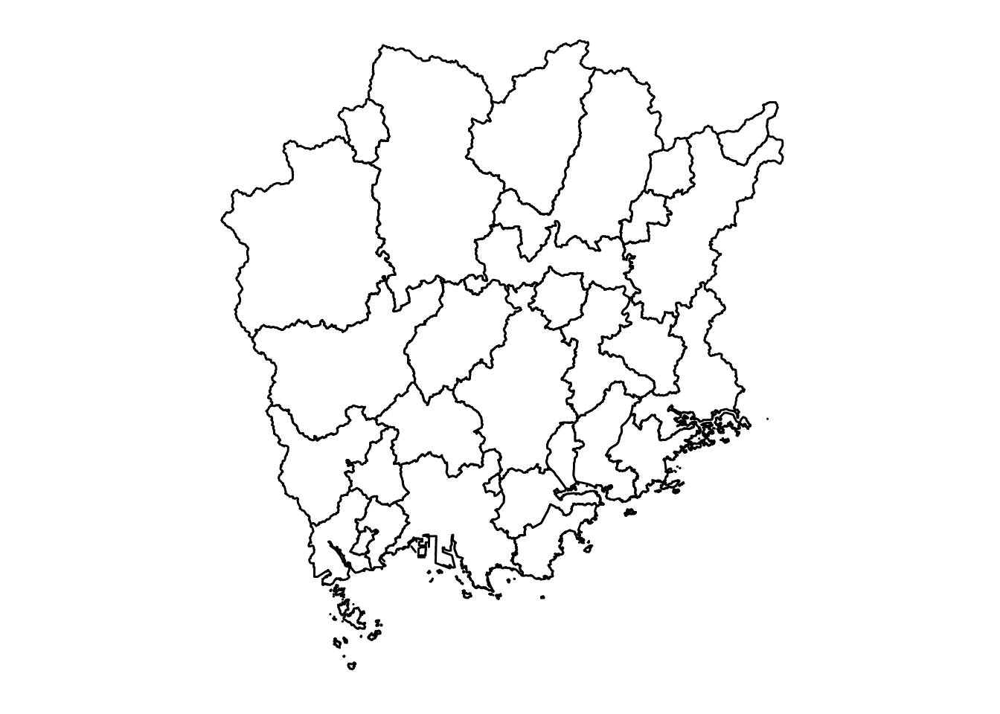

Shinya Uryu
2016-11-22
パッケージと都道府県の県庁所在地のデータを読み込みます。
library(magrittr)
library(dplyr)
library(spdplyr)
library(jpndistrict)
data("jpnprefs")spdf.33 <- spdf_jpn_cities(jis_code_pref = 33, jis_code = c(33101, 33102, 33103, 33104, 33205))ggplot2
library(ggplot2)
library(ggthemes)
d33 <- jpnprefs %>% filter(prefecture == "岡山県") %>%
rename(lat = capital_latitude,
long = capital_longitude) %>%
mutate(id = 33101)
p <- spdf.33 %>% fortify() %>% gg_jpn_district()
p + geom_point(data = d33, aes(x = long, y = lat, fill = "#2196F3", size = 6)) +
guides(fill = FALSE, size = FALSE)
spdf_jpn_pref(code = "33", district = TRUE) %>% gg_jpn_district()
p <- spdf_jpn_cities(jis_code_pref = 33, jis_code = c(33103)) %>% gg_jpn_district()
p - theme_map()
plotly (test)
library(plotly)
g <- list(
scope = "asia",
showland = TRUE,
landcolor = toRGB("grey83"),
subunitcolor = toRGB("white"),
countrycolor = toRGB("white"),
showlakes = TRUE,
lakecolor = toRGB("white"),
showsubunits = TRUE,
showcountries = TRUE,
resolution = 50,
projection = list(
type = "conic conformal",
rotation = list(lon = 130)
),
lonaxis = list(
showgrid = TRUE,
gridwidth = 0.5,
range = c(min(jpnprefs$capital_longitude) - 3, max(jpnprefs$capital_longitude) + 3),
dtick = 5
),
lataxis = list(
showgrid = TRUE,
gridwidth = 0.5,
range = c(min(jpnprefs$capital_latitude) - 5, max(jpnprefs$capital_latitude) + 5),
dtick = 5
)
)
plot_geo(jpnprefs, lat = ~capital_latitude, lon = ~capital_longitude) %>%
add_markers() %>%
layout(geo = g)d <- read_ksj_p33(code = 33) %>%
dplyr::filter(!grepl("(支所|出張所|庁舎)$", name))
g <- list(
scope = "asia",
showland = TRUE,
landcolor = toRGB("grey83"),
subunitcolor = toRGB("white"),
countrycolor = toRGB("white"),
showlakes = TRUE,
lakecolor = toRGB("white"),
showsubunits = TRUE,
showcountries = TRUE,
resolution = 50,
projection = list(
type = "conic conformal",
rotation = list(lon = 130)
),
lonaxis = list(
showgrid = TRUE,
gridwidth = 0.5,
range = c(min(d$longitude) - 3, max(d$longitude) + 3),
dtick = 5
),
lataxis = list(
showgrid = TRUE,
gridwidth = 0.5,
range = c(min(d$latitude) - 5, max(d$latitude) + 5),
dtick = 5
)
)
plot_geo(d@data, lat = ~latitude, lon = ~longitude) %>%
add_markers(
text = ~paste(d$name, "<br>", d$address), hoverinfo = "text"
) %>%
layout(geo = g)